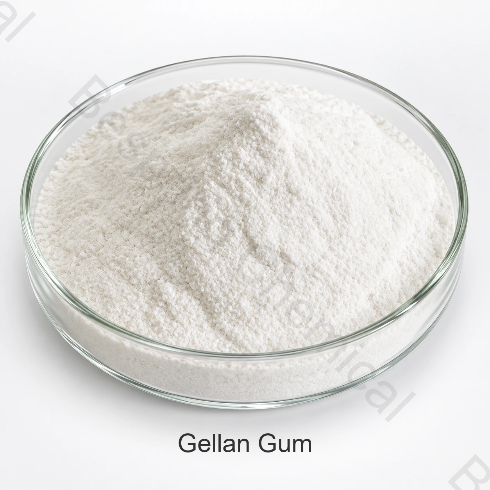

Yêu cầu cấp bậc và thử ra
Để có khả năng cung cấp, chỉ định thấp hoặc cao acyl, phương pháp gel-minion, kích thước hạt, giới hạn vi sinh học và cần thiết chứng nhận.
Thành phần mức thức ăn · Hydcolloid, chất làm mềm và ổn định ·E418
Kẹo cao su cấp thực phẩm gellan là một loại hydrocolloid được cấp dưỡng với mức độ cao và chất lượng cao để giảm hiệu suất, hình thành gel và kiểm soát kết cấu.

Hình minh họa sản phẩm · cấp chất lượng và quy cách đóng gói được nêu trong báo giá
Chia sẻ ứng dụng, giới hạn quan trọng, phương pháp thử nghiệm, số lượng, gói gọn và điểm đến.
Yêu cầu báo giá theo cấp chất lượng và số lượng dự kiến.
Yêu cầu báo giá theo cấp chất lượng và số lượng dự kiến.
Điểm cần đối chiếuXác nhận nạp cho gói đã chọn
Bằng chứng bantchYêu cầu chi tiết và mật khẩu COA
Tổng quát sản phẩm
Kẹo cao su cấp thực phẩm là chất polysaccharide có trọng lượng cao được sản xuất bởi sự lên men có kiểm soát. chất lượng thấp thường xây dựng các loại keo bền hơn, trong khi điểm cao thường cung cấp các kết cấu mềm hơn, dẻo hơn. hiệu suất cuối cùng phụ thuộc vào lớp, lực lượng, chất rắn hơn, pH và quá trình.
Tính hợp tác thương mại phụ thuộc vào điểm chính xác, nguồn, phương pháp thử nghiệm, chức năng và các quy tắc thị trường đích đến.
Danh sách tiến trình
Hãy so sánh những phương pháp được đề nghị, kiểm tra và yêu cầu ứng dụng trước khi yêu cầu mẫu thử hoặc đặt một lệnh.
Để có khả năng cung cấp, chỉ định thấp hoặc cao acyl, phương pháp gel-minion, kích thước hạt, giới hạn vi sinh học và cần thiết chứng nhận.
Điểm số thấp và điểm số cao không thể thay đổi; xác định kết cấu mục tiêu, giảm nhu cầu và hệ thống eon.
Yêu cầu thử nghiệm trong nước ép axit thực sự, nước thực vật nguyên chất hoặc nước khoáng.
Cho biết cấp chất lượng, hồ sơ, lượng dự kiến, quy cách đóng gói và nơi giao.
Kiểm tra ứng dụng
Phần chọn ứng dụng phụ thuộc vào sự cho phép thị trường đích và thử nghiệm thực phẩm hoàn thiện.
Hỗ trợ đình chỉ dài hạn và ổn định thị giác khi hệ thống kích hoạt và điểm được chọn chính xác.
Giúp giữ chất khoáng, chất xơ hoặc ca cao trong khi quản lý việc tách ra và uống nước.
Có thể tạo ra gel ổn định trong các khái niệm giảm tải sau khi PH, rắn và Eon thử nghiệm.
Cung cấp sự đình chỉ, cấu trúc hoặc kết cấu co giãn trong sữa và hệ thống tráng miệng tương thích.
Các tùy chọn thấp và cao độ cho phép sự mạnh mẽ, độ dẻo dai và giải phóng.
Thêm cơ thể và sự ổn định với mức sử dụng thấp sau khi hình thành hợp lệ.
Đặc điểm thương mại
Những đặc điểm tham khảo thương mại này tách biệt với các kết quả và yêu cầu điều chỉnh hàng loạt của COA. Hãy cân nhắc điểm, cơ bản phân tích và các phương pháp thử nghiệm cho thứ tự của bạn.
Vuốt hoặc dùng bàn phím để đọc tất cả các cột
| Chỉ tiêu | Acyl Gellan Gum thấp | Gôm gellan hàm lượng acyl cao |
|---|---|---|
| Diện mạo | Bột trắng | Bột trắng |
| Độ tinh khiết | 85.0-108.0% | 85.0-108.0% |
| pH | 5.0-8.0 | 5.0-8.0 |
| Khả năng ngưng hoạt động | Qua | Qua |
| Sức mạnh Gel | ≥850 g/cm² | ≥400 g/cm² |
| Isopropanol | ≤750 mg/kg | ≤750 mg/kg |
| Kiểm tra nhận diện | Qua | Qua |
| Hao hụt khi sấy | ≤15.0% | ≤15.0% |
| Tốc độ đánh máy 60 mesh | ≥92% | ≥92% |
| chì (như Pb) | ≤2 mg/kg | ≤2 mg/kg |
| Kim loại nặng (như Pb) | ≤20 mg/kg | ≤20 mg/kg |
| Asen (As) | ≤2 mg/kg | ≤2 mg/kg |
| Cadimi (Cd) | ≤1 mg/kg | ≤1 mg/kg |
| Tổng thủy ngân (Hg) | ≤1 mg/kg | ≤1 mg/kg |
| Tổng số đĩa | ≤10,000 CFU/g | ≤10,000 CFU/g |
| đặc và men | ≤400 CFU/g | ≤400 CFU/g |
| Coiforms | ≤30 MPN/100 g | ≤30 MPN/100 g |
| Salmonella | Không phát hiện trong 10g | Không phát hiện trong 10g |
Ghi chú cụ thể: Chỉ tiêu thương mại “độ tinh khiết 85.0-108.0%” không thể so sánh trực tiếp với phép định lượng JECFA biểu thị qua hiệu suất cacbon dioxit. Nêu đại lượng đo, phương pháp và dạng acyl trong tiêu chuẩn có chữ ký. Gôm gellan là polyme biến thiên; C40H68O38 không phải công thức phân tử cố định của sản phẩm.
Chọn kỹ thuật
Chọn acyl thấp cho các hành vi gel co cứng/brittle hoặc acyl cao cho các kết cấu mềm hơn/elcyl, sau đó xác thực trong công thức thực.
Chia sẻ Canxi, Natri, Kali, PH, có thể làm tan chảy chất rắn và điều kiện xử lý nhiệt.
Kết hợp năng lượng gel, ngưng trệ và nước trước khi so sánh mẫu.
Xác nhận còn thiếu dung môi, kim loại và giới hạn vi sinh học cho thị trường đích đến.
Hỗ trợ độ phân giải
Yêu cầu các phương pháp thử nghiệm và đại diện hoặc hàng loạt COA được ký hiện nay.
Cho biết cấp chất lượng, hồ sơ, lượng dự kiến, quy cách đóng gói và nơi giao.
ôn lại Đặc tả về kẹo cao su FAO/JECFA để xác định ngữ cảnh, sau đó áp dụng các quy tắc thị trường đích riêng.
Lưu trữ và xử lý
Hỏi người mua
Gillan Gum được dùng trong việc cấu tạo thức ăn cho hydrocolloid, tác nhân làm mềm và chức năng ổn định. Cần phải xác nhận tính hợp pháp, sử dụng và liều lượng cho đúng mục tiêu và thực phẩm đã hoàn thành.
Gôm gellan được nhận dạng bằng CAS 71010-52-1 và INS 418; Codex GSFA hiện liệt kê 418(i). Xác nhận chính xác cấp được cung cấp và quy định hiện hành của thị trường.
Số lượng tham khảo tối thiểu là 500kg. Mẫu thử nghiệm và thương mại nên được xác nhận cho lớp đã chọn.
Cho biết cấp chất lượng, hồ sơ, lượng dự kiến, quy cách đóng gói và nơi giao.
Cung cấp ứng dụng thực phẩm, đặc tả mục tiêu và thử nghiệm phương pháp, số lượng, hạt hoặc ưu tiên cấp, đích, yêu cầu palet yêu cầu, giấy chứng nhận và ngày giao hàng.
Thành phần liên quan
Xem lại danh tính, đặc điểm, ứng dụng và xem xét trợ cấp.
Xem lại danh tính, đặc điểm, ứng dụng và xem xét trợ cấp.
Xem lại danh tính, đặc điểm, ứng dụng và xem xét trợ cấp.
Tìm nguồn dựa trên chỉ tiêu kỹ thuật
Hãy chia sẻ các hồ sơ, mức độ mục tiêu và giới hạn, số lượng, đóng gói, điểm đến và cần thiết cho một đề xuất lớn có liên quan.
Nếu không dùng được biểu mẫu, hãy dùng trang liên hệ. Bạn cũng có thể gửi email cho bộ phận kinh doanh.
Cho chúng tôi biết điểm số và điểm đến của anh để chúng tôi có thể xác nhận tài liệu nào có sẵn cho đơn đặt hàng của anh.
Một tham chiếu bên ngoài không phải là một chứng nhận hàng loạt hoặc một đặc điểm sản phẩm Bespring.